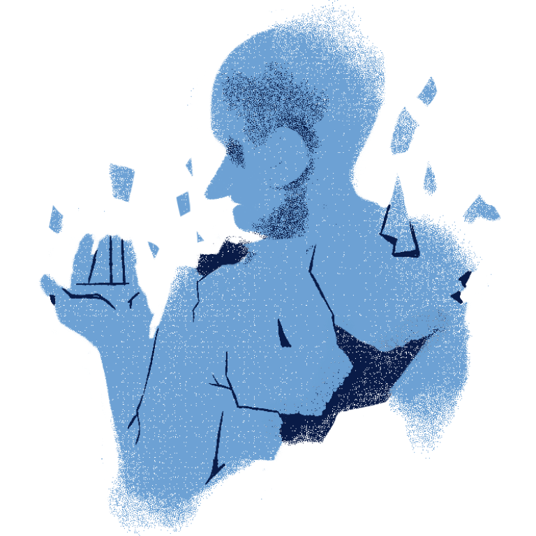

EMOTIONAL HEALTH
Emotions. Feelings. Mental Health.
Such words can define how we live our life. One can feel unusually positive because their sleep is uninterrupted, it's their day-off, and they don't have too much responsibilities. Yet one is also friends with someone who feels unmotivated and depressed. They experience multiple episodes of anxiety and stress, almost as if they're always lost in their emotions. Yet the two never left each other's side, serving as the other's moral support on their times of need. They were both aware of each other's emotions and guide each other through life's ups and downs.
Emotional health is how we perceive our own emotions and how we choose to define and regulate them. It can be said that emotional health falls under the broad umbrella of mental health, as both are influenced by a person's environment, physical health, life experiences, and cognitive function. What makes emotional health unique is emotional health pertains more on how a person recognizes, expresses, and manages feelings and moods.
Importance of Emotional Health
A person tends to feel intense emotions every now and then, such is life. It's only natural for us to react and express ourselves but not everyone is capable of understanding such emotions, nor how to manage it. When unchecked, it can affect our behavior, our cognitive function, and our relationships.
For example, a person who thinks that he shouldn't show too much emotion to anyone can start feeling anxiety because he has learned that expressing himself won't present a good view of him to other people. He starts to hide his feelings, go home with a heavy heart, afraid and thinking no one can understand him. Eventually his sadness starts to turn into cold and harsh emotions. He starts to push people away who try to get close to him personally. Eventually, He would end up hurting a lot of people, even his own relationships.
An unfortunate ending can occur if emotions are left ignored, unchecked, and unrecognized. It is difficult to understand emotions if you won't let yourself be open to changes. Though it takes time for one to fully explore their feelings, it is important to cherish such exploration as a way to embrace oneself.

Check in with yourself throughout the day.

Identify your feelings, learn what they really are.

Identify what triggers your emotions.